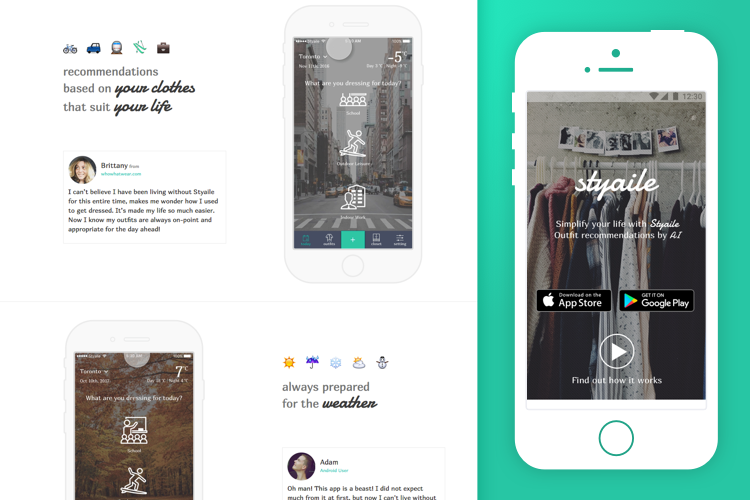
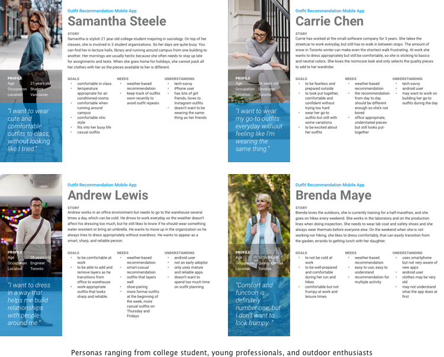
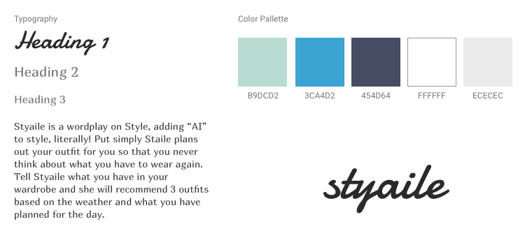
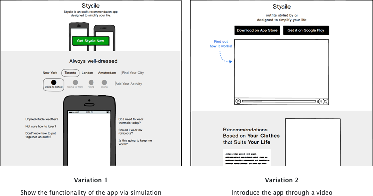
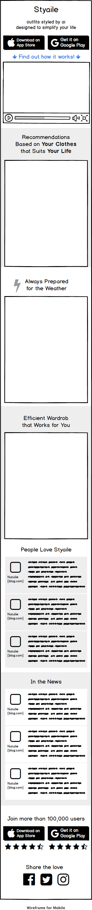

Product Showcase
A landing page that is calm and minimalist in nature, but tells the story that needs to be told, and is clear in objective.
Summary of the Project
This project is an extension to the previous case study Styaile, if you haven’t read that one, I highly recommend, it shows a lot of my UX process and design decisions. This project is where I made a responsive landing page for Styaile - the mobile app that provides outfit recommendations based on the weather, your clothes and lifestyle. This is an independent project, I received weekly feedback from my mentor and peer feedback. The project took roughly 1 week, totalling 50 hrs including prototyping in html.
View Live PrototypeThe Process
The process of creating this landing page was to start with defining the goals, identifying the target audience, creating and evaluating alternative solutions, and leveraging existing brand elements to create the final design.
Design Brief
Create a one-page marketing web page to showcase the mobile application Styaile. The objectives of this page are:
- Clearly showcase what Styaile is about, communicate the value it adds, and how it fits into one’s life
- Provide quick access to the download source
Personas
In order to appeal to the target audience, it is important to know who they are and what their values and preferences are. I had the work cut out for me because I have already created personas while I was working on Styaile. Here are the personas that I created for Styaile. The take-away of revisiting the personas is that the target audience consist mainly of younger crowd, people who are in high school, college, and young professionals that want to make their daily lives more comfortable and making a good impression through the way they dress. Their tones are casual and laid-back, and are very familiar with mobile devices and internet culture.
Branding
I leveraged the branding assets from Styaile, reusing the typography and colors chosen for the app so that the transition from the landing page to the app is a cohesive experience. Another thing to note is that emojis are used throughout the communication of Styaile in onboarding, adding a new item to draw attention to the action, create a similar experience as if the user is texting their friends and also making what may seem like a long process (onboarding) for enjoyable. See below for color palette, typography and logo.
Wireframes
Before starting wireframing, I first listed out the sections and content that I want to include on the page: an overview section with quick access to download the app, benefits sections to explain the features and benefit of Styaile in more detail, testimonials and social proof. From there I created 2 different variations of the landing page wireframe.
In the first variation I designed a little simulation as a way for people to quickly see the benefits of the app by interacting with something that represent the core functions. While this variation still hits a soft spot in my heart, there are a few drawbacks:
- The simulation is not truly representative of the app experience, it is similar in function but the experience and use cases are totally different. If the user likes this version, he/she may be disappointed in the mobile app, or if the user doesn’t like it, it may turn them away from downloading the app.
- Translating the simulation to a mobile device can be very difficult, when not done properly it can turn people away.
Introducing the app through a video seems like a more feasible idea, it also requires less effort on the user’s side, and a much more controlled experience.
Based on this decision, I created the tablet and mobile versions of the wireframe. I rearranged the testimonials to its own section on the mobile version because I wanted each benefit section to fit on a single screen instead of having a testimonial in the middle and breaking up the section. Also people tend to scroll very fast when browsing on mobile devices (think back on your Instagram and Facebook experience, a real addict always try to get to the bottom of the page ), so having an extra testimonial section creates more visual interest.
Final Design
Because of the minimalist nature of my design, my mentor suggested that I use a hero background image to create more visual interest. I chose an image of a very a clothing rack that is organized but still relatable. The image helps to imply the underlying narrative of the app. I made the hero 90% of the viewport height so that the latter sections can peak through, that way the user knows there's more information to come.
In the benefit sections I created a simple, bite-sized one-liner copy per benefit, while highlighting the keywords with the accent font, and using 6 emojis that not only acts as section dividers but also sets the tone for that particular benefit. E.g. the first section talks about lifestyle, so I used transportation, activity based emojis. Maybe the user is a biker, or a skier the emoji can draw their attention to read more into the section.
I also included an animation of the app interaction that is relevant to the particular benefit. It sets the expectation for what the app looks like when it's installed, and also helps to proof how the particular benefit is delivered by Styaile. Finally, the benefit is further reinforced by the customer testimonial.
The last section is any news coverage on Styaile to establish trust with the potential user. The footer anticipates the user’s desire and hesitance to try out the app with some social proof in the number of users and ratings of the app which provides social proof of Styaile’s value. I also provided a mockup of what the app icon looks like so that the user knows what to look for when searching in the app store.
View Live PrototypeLessons Learned
Keep it simple, when adding a new section or component or even an image, question the value it adds, sometimes not too much! Simple designs saves me time and the user’s time. When putting this out for peer review, I received a lot of positive feedback especially on the use of negative space.
Also, Sketch exports svg! Photoshop can render video and export gifs
Disclaimer
The persona, clothes and outfit images are from various sources on the internet. This is a personal, experimental and conceptual project, and it is not for profit.
Like what you read? There's more!

Styaile
a mobile app design
Ethical Shopper
a responsive e-commerce site